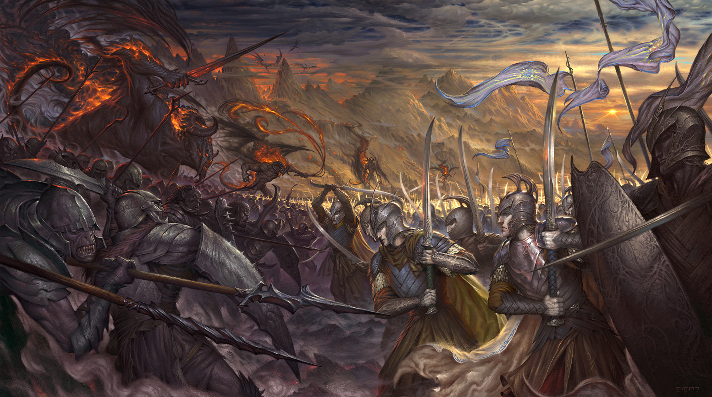

The First Age, often called the Elder Days, was the first historical era in Arda that began with the Awakening of the Elves in YT 1050 and ended with the final overthrow of Morgoth after the War of Wrath, when he was banished from Arda into the Void. However, despite the fact that most of the First Age spanned through the Years of the Trees, for the purpose of convenience this article covers its last 590 solar years which followed the first sunrise.
J.R.R. Tolkien described primarily the events of the First Age that occurred in Beleriand. These were centered on a series of wars waged by the Sindar, the Ñoldor and the Three Houses of the Edain (Mankind), against the power of Morgoth. The wars had begun in the Years of the Trees, but were refreshed after the arrival of the Ñoldor in Beleriand. There had been Elves in Beleriand for uncounted millennia, but who were passive, and Morgoth had little to do with them. The Ñoldor, on the other hand, particularly the Sons of Fëanor, had come with the express purpose of opposing Morgoth.
After the destruction of Two Trees of Valinor, the Valar made the Sun and the Moon out of the final fruit of Laurelin and the final flower of Telperion and set them in the heavens. That began The Years of the Sun, and Men awoke at the first rising of the first Sun.
After Men awoke and the Sun started its way through heavens, the First Age continued for about another 590 years. It ended with the final overthrow of Morgoth by the Valar in the War of Wrath, after the voyage of Eärendil. After that time every following Age was counted in the Years of the Sun exclusively.
